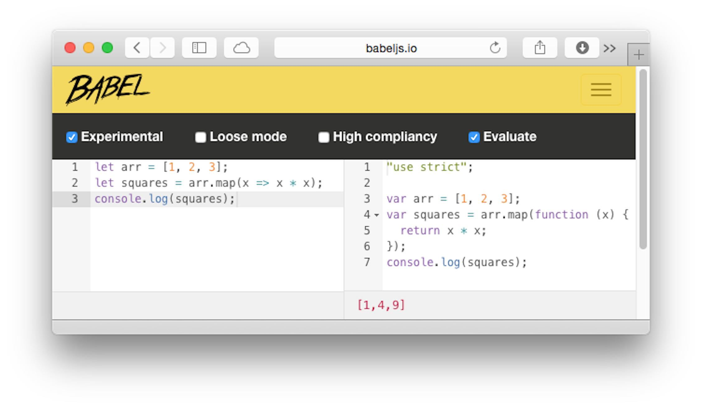

本文内容：
- 讲解了如何使用交互式的方式体验 ES6 。
- 列举了容易被人接受的 ES6 特性，附带这些特性在 ES5 中的实现方式。
体验 ECMAScript 6
有三种简单的方式可以运行 ES6 代码：
- 1、 Web 浏览器：使用在线的 Babel REPL ，这是一个交互式的工具，将 ES6 代码编译成 ES5 代码。采用这种方式的话就不用安装任何东西。
- 2、命令行：使用
babel-node ，一个 Node.js 可执行程序的版本，认识 ES6 代码（在内部会编译成 ES5 代码）。可以通过 npm 安装。
- 3、各种 JavaScript 引擎：查询 kangax 的 ES6 兼容表格，可以找到本地支持 ES6 的引擎。
下面将会给出更多关于选项1和2的内容。
Babel REPL
Babel REPL 有四个主要部分：
- 左上角部分包含 ES6 源码。
- 左下角部分显示 ES6 代码中发现的语法错误。
- 右上角部分包含 ES6 代码编译成的 ES5 代码。
- 右下角部分展示通过
console.log() 输出的内容。

babel-node
babel-node 可执行程序可以通过 npm 安装：
1
| npm install --global babel
|
你可以像使用可执行程序 node 一样使用 babel-node 。类似于 node ，像这样启动一个交互式的 REPL ：
一旦进入该 REPL ，你就可以执行 ES6 代码了：
1 2 3
| > let arr = [1, 2, 3]; > arr.map(x => x * x) [ 1, 4, 9 ]
|
注意 babel-node 目前还不支持多行输入。
Babel 官网有更多关于 Babel 命令行工具的信息。
本文接下来的部分描述了易于接受的 ES6 特性。
从 var 到 let/const
ES6 有两种新的声明变量的方式：
let （大致）相当于 var 的一个块级范围版本。const 类似于 let ，但是用于创建常量：值不能被改变的变量。
一般情况下，你可以用 let 或者 const 替换每一个 var 。但是不能盲目地这么做，因为不同类型的变量作用范围可能会改变代码的运行流程。看下面的用 ES5 写的例子：
1 2 3 4 5 6 7 8 9
| var x = 3; function func(randomize) { if (randomize) { var x = Math.random(); return x; } return x; } func(false);
|
func() 返回 undefined ，这可能会比较奇怪。如果重写一下这段代码，让其更清楚地展现出来实际上发生了什么，你就明白了：
1 2 3 4 5 6 7 8 9 10
| var x = 3; function func(randomize) { var x; if (randomize) { x = Math.random(); return x; } return x; } func(false);
|
如果你在最初的版本中用 let 替换 var ，将会得到不一样的结果：
1 2 3 4 5 6 7 8 9
| let x = 3; function func(randomize) { if (randomize) { let x = Math.random(); return x; } return x; } func(false);
|
因此，盲目地用 let 或者 const 替换 var 很危险。我的建议是：
- 仅在新的代码中使用
let/const 。
- 不动老的代码，或者小心地重构老的代码。
从 IIFE 到块级作用域
在 ES5 中，你必须使用 IIFE 来使变量保持本地化：
1 2 3 4 5 6
| (function () { var tmp = ···; ··· }()); console.log(tmp);
|
在 ECMAScript 6 中，你可以简单地使用一个块和一个 let 声明：
1 2 3 4 5 6
| { let tmp = ···; ··· } console.log(tmp);
|
从拼接字符串到模板字面量
在 ES6 中， JavaScript 终于拥有了字面量式的字符串插值和多行字符串功能。
字符串插值
在 ES5 中，通过拼接字符串片段和变量值的方式来把变量值插入到字符串中：
1 2 3
| function printCoord(x, y) { console.log('('+x+', '+y+')'); }
|
在 ES6 中，你可以通过模板字面量的方式实现字符串插值：
1 2 3
| function printCoord(x, y) { console.log(`(${x}, ${y})`); }
|
多行字符串
模板字面量也可以用于表示多行字符串。
例如，下面是在 ES5 中表示多行文本的样子：
1 2 3 4 5 6 7 8 9 10
| var HTML5_SKELETON = '<!doctype html>\n' + '<html>\n' + '<head>\n' + ' <meta charset="UTF-8">\n' + ' <title></title>\n' + '</head>\n' + '<body>\n' + '</body>\n' + '</html>\n';
|
如果你通过反斜线转义换行符，代码看起来就漂亮一点了（但是仍然需要显示地添加新行）：
1 2 3 4 5 6 7 8 9 10
| var HTML5_SKELETON = '\ <!doctype html>\n\ <html>\n\ <head>\n\ <meta charset="UTF-8">\n\ <title></title>\n\ </head>\n\ <body>\n\ </body>\n\ </html>';
|
ES6 模板字面量可以跨越多行：
1 2 3 4 5 6 7 8 9 10
| const HTML5_SKELETON = ` <!doctype html> <html> <head> <meta charset="UTF-8"> <title></title> </head> <body> </body> </html>`;
|
（这些例子包含的空格数是不一样的，但是在此处并不重要。）
从函数表达式到箭头函数
在当前的 ES5 代码中，在函数表达式中必须小心使用 this 。在下面的例子中，我创建了辅助变量 _this （行 A ），以便在行 B 能够访问到 UiComponent 的 this 。
1 2 3 4 5 6 7 8 9 10 11
| function UiComponent { var _this = this; var button = document.getElementById('myButton'); button.addEventListener('click', function () { console.log('CLICK'); _this.handleClick(); }); } UiComponent.prototype.handleClick = function () { ··· };
|
在 ES6 中，你可以使用箭头函数，它不会改变 this 指向（行 A ，词法范围的 this ）：
1 2 3 4 5 6 7 8 9 10 11 12
| class UiComponent { constructor() { let button = document.getElementById('myButton'); button.addEventListener('click', () => { console.log('CLICK'); this.handleClick(); }); } handleClick() { ··· } }
|
箭头函数对于短小的仅返回表达式值的回调函数来说尤其方便。
在 ES5 中，这样的回调函数相当啰嗦：
1 2
| var arr = [1, 2, 3]; var squares = arr.map(function (x) { return x * x });
|
在 ES6 中，箭头函数简洁很多：
1 2
| let arr = [1, 2, 3]; let squares = arr.map(x => x * x);
|
在定义参数的时候，如果参数是一个标识符，甚至可以省略括号。所以： (x) => x * x 和 x => x * x 都是合法的。
处理多个返回值
一些函数或者方法通过数组或对象返回多个值。在 ES5 中，如果想要访问这些值，总是需要创建一些中间变量。在 ES6 中，可以借助于解构来避免中间变量。
借助数组返回多个值
exec() 通过类数组对象返回捕获到的匹配组。在 ES5 中，需要一个中间变量（下面例子中的 matchObj ），即便是你仅对匹配组感兴趣：
1 2 3 4 5 6
| var matchObj = /^(\d\d\d\d)-(\d\d)-(\d\d)$/ .exec('2999-12-31'); var year = matchObj[1]; var month = matchObj[2]; var day = matchObj[3];
|
在 ES6 中，解构使代码更简单：
1 2 3
| let [, year, month, day] = /^(\d\d\d\d)-(\d\d)-(\d\d)$/ .exec('2999-12-31');
|
左侧数组模式开始处为空，可以跳过右侧索引为0的数组元素。
借助对象返回多个值
方法 Object.getOwnPropertyDescriptor() 返回一个属性描述符，一个包含多个属性值的对象。
在 ES5 中，即便你仅对一个对象的属性感兴趣，仍然需要一个中间变量（下例中的 propDesc ）：
1 2 3 4 5 6 7
| var obj = { foo: 123 }; var propDesc = Object.getOwnPropertyDescriptor(obj, 'foo'); var writable = propDesc.writable; var configurable = propDesc.configurable; console.log(writable, configurable);
|
在 ES6 中，可以使用解构：
1 2 3 4 5 6
| let obj = { foo: 123 }; let {writable, configurable} = Object.getOwnPropertyDescriptor(obj, 'foo'); console.log(writable, configurable);
|
{writable, configurable} 是下面内容的缩写：
1
| { writable: writable, configurable: configurable }
|
从 for 到 forEach() ，再到 for-of
在 ES5 之前，可以选择使用数组方法 forEach() ：
1 2 3
| arr.forEach(function (elem) { console.log(elem); });
|
for 循环的优点在于可以中断， forEach() 的优点在于简洁。
在 ES6 中， for-of 循环结合了两种优点：
1 2 3 4
| let arr = ['a', 'b', 'c']; for (let elem of arr) { console.log(elem); }
|
如果想访问每个元素的索引和值， for-of 也可以做到，通过新的数组方法 entries() 和解构：
1 2 3
| for (let [index, elem] of arr.entries()) { console.log(index+'. '+elem); }
|
处理参数默认值
在 ES5 中，为参数指定默认值的代码像这样：
1 2 3 4 5
| function foo(x, y) { x = x || 0; y = y || 0; ··· }
|
ES6 有更漂亮的语法：
1 2 3
| function foo(x=0, y=0) { ··· }
|
一个额外的好处就是，在 ES6 中，参数默认值只会被 undefined 触发，而在之前的 ES5 代码中，任何假值都会出发默认值。
处理命名参数
在 JavaScript 中使用命名参数的一种通常做法是通过对象字面量的方式（所谓的可选对象模式）：
1
| selectEntries({ start: 0, end: -1 });
|
这种方式的两个优点是：代码可读性更好，并且可以更容易地省略任何参数。
在 ES5 中，你可以这样实现 selectEntries() ：
1 2 3 4 5 6
| function selectEntries(options) { var start = options.start || 0; var end = options.end || -1; var step = options.step || 1; ··· }
|
在 ES6 中，你可以在参数定义中使用解构，代码看起来就更简单了：
1 2 3
| function selectEntries({ start=0, end=-1, step=1 }) { ··· }
|
可选参数
在 ES5 中，要让参数 options 变得可选，会添加行 A 所示的代码：
1 2 3 4 5 6 7
| function selectEntries(options) { options = options || {}; var start = options.start || 0; var end = options.end || -1; var step = options.step || 1; ··· }
|
在 ES6 中，可以用 {} 指定参数的默认值：
1 2 3
| function selectEntries({ start=0, end=-1, step=1 } = {}) { ··· }
|
从 arguments 到剩余参数
在 ES5 中，如果想要函数（或者方法）接收任意数量的参数，就必须使用特殊变量 arguments ：
1 2 3 4 5
| function logAllArguments() { for (var i=0; i < arguments.length; i++) { console.log(arguments[i]); } }
|
在 ES6 中，可以通过 ... 操作符声明一个剩余参数（下例中的 args ）：
1 2 3 4 5
| function logAllArguments(...args) { for (let arg of args) { console.log(arg); } }
|
如果仅对尾部的参数感兴趣，剩余参数看起来就更漂亮了：
1 2 3
| function format(pattern, ...args) { ··· }
|
在 ES5 中处理这种场景很笨拙：
1 2 3 4 5
| function format() { var pattern = arguments[0]; var args = arguments.slice(1); ··· }
|
剩余参数让代码可读性更好：你可以从参数定义上面看出来一个函数是否有不定数量的参数。
从 apply() 到扩展操作符（ … ）
在 ES5 中，用 apply() 将数组转换成参数。 ES6 有扩展操作符可以达到这个目的。
4.11.1 Math.max()
ES5 - apply() ：
1 2
| > Math.max.apply(null, [-1, 5, 11, 3]) 11
|
ES6 - 扩展操作符：
1 2
| > Math.max(...[-1, 5, 11, 3]) 11
|
Array.prototype.push()
ES5 - apply() ：
1 2 3 4 5
| var arr1 = ['a', 'b']; var arr2 = ['c', 'd']; arr1.push.apply(arr1, arr2);
|
ES6 - 扩展操作符：
let arr1 = [‘a’, ‘b’];
let arr2 = [‘c’, ‘d’];
arr1.push(…arr2);
// arr1 is now [‘a’, ‘b’, ‘c’, ‘d’]
从 concat() 到扩展操作符（ … ）
扩展操作符也能将操作数的内容转换成数组元素，也就是说它实现数组方法 concat() 的功能。
ES5 - concat() ：
1 2 3 4 5 6
| var arr1 = ['a', 'b']; var arr2 = ['c']; var arr3 = ['d', 'e']; console.log(arr1.concat(arr2, arr3));
|
ES6 - 扩展操作符：
1 2 3 4 5 6
| let arr1 = ['a', 'b']; let arr2 = ['c']; let arr3 = ['d', 'e']; console.log([...arr1, ...arr2, ...arr3]);
|
从构造函数到类
相对于构造函数来说，ES6 类是一种更加方便的语法。
基类
在 ES5 中，直接实现构造函数：
1 2 3 4 5 6
| function Person(name) { this.name = name; } Person.prototype.describe = function () { return 'Person called '+this.name; };
|
在 ES6 中，类为构造函数提供了略微方便的语法：
1 2 3 4 5 6 7 8
| class Person { constructor(name) { this.name = name; } describe() { return 'Person called '+this.name; } }
|
继承类
在 ES5 中实现子类很复杂，尤其是要指向父类构造函数和父类属性。下面是一种比较正规的创建 Person 的子构造器 Employee 的方式：
1 2 3 4 5 6 7 8 9 10
| function Employee(name, title) { Person.call(this, name); this.title = title; } Employee.prototype = Object.create(Person.prototype); Employee.prototype.constructor = Employee; Employee.prototype.describe = function () { return Person.prototype.describe.call(this) + ' (' + this.title + ')'; };
|
ES6 内置支持子类继承，使用 extends 子句：
1 2 3 4 5 6 7 8 9
| class Employee extends Person { constructor(name, title) { super(name); this.title = title; } describe() { return super.describe() + ' (' + this.title + ')'; } }
|
从自定义错误构造函数到 Error 子类
在 ES5 中，不可能内置构造器的继承（除了 Error ）。下面的代码展示了一种继承的方式，并赋予了构造函数 MyError 一些重要的特性，比如堆栈跟踪：
1 2 3 4 5 6 7
| function MyError() { var superInstance = Error.apply(null, arguments); copyOwnPropertiesFrom(this, superInstance); } MyError.prototype = Object.create(Error.prototype); MyError.prototype.constructor = MyError;
|
在 ES6 中，所有内置的构造函数都可以被继承，这就是为什么下面的代码实现了在 ES5 中只能模拟的功能：
1 2
| class MyError extends Error { }
|
从对象字面量中的函数表达式到方法定义
在 JavaScript 中，方法就是值为函数的属性。
在 ES5 对象字面量中，方法以类似于其他属性的方式创建。属性值通过函数表达式提供。
1 2 3 4 5 6 7 8
| var obj = { foo: function () { ··· }, bar: function () { this.foo(); }, }
|
ES6 有方法定义，一种创建方法的特殊语法：
1 2 3 4 5 6 7 8
| let obj = { foo() { ··· }, bar() { this.foo(); }, }
|
从对象到 Map
把语言结构 object 用作字符串到任意值的映射（一种数据结构）是 JavaScript 中一直以来的一种替代解决方案。实现这种影射最安全的方式就是创建一个 prototype 为 null 的对象，然后你还得确保没有键名会是 __proto__ ，因为这个键名在很多 JavaScript 引擎中都会触发特殊的功能。
下面的 ES5 代码包含了函数 countWords ，该函数将对象 dict 用作一个 map ：
1 2 3 4 5 6 7 8 9 10 11 12 13 14 15 16
| var dict = Object.create(null); function countWords(word) { var escapedWord = escapeKey(word); if (escapedWord in dict) { dict[escapedWord]++; } else { dict[escapedWord] = 1; } } function escapeKey(key) { if (key.indexOf('__proto__') === 0) { return key+'%'; } else { return key; } }
|
在 ES6 中，可以使用内置的数据结构 Map ，并且不需要转义键名。不过有一个缺点，对 map 中的值进行自增操作变得更不方便了。
1 2 3 4 5
| let map = new Map(); function countWords(word) { let count = map.get(word) || 0; map.set(word, count + 1); }
|
map 的另一个优点是可以用任何值作为键，而不仅仅是字符串。
从 CommonJS 模块到 ES6 模块
直到 ES5 ，基于 AMD 语法或者 CommonJS 语法的模块系统才几乎替代了手写的解决方案（比如暴露的模块方式）。
ES6 内置支持模块。但是，目前还没有 JavaScript 引擎原生支持。但是像 browserfy 、 webpack 或者 jspm 这些工具让你能够使用 ES6 语法来创建模块，从而使你写的代码不会过时。
导出多个值
在 CommonJS 里，像下面这样导出多个实体：
1 2 3 4 5 6 7 8 9 10 11 12 13 14 15 16 17 18 19 20
| var sqrt = Math.sqrt; function square(x) { return x * x; } function diag(x, y) { return sqrt(square(x) + square(y)); } module.exports = { sqrt: sqrt, square: square, diag: diag, }; var square = require('lib').square; var diag = require('lib').diag; console.log(square(11)); console.log(diag(4, 3));
|
相应地，你可以引入整个模块为一个对象，然后通过这个对象访问 square 和 diag ：
1 2 3 4
| var lib = require('lib'); console.log(lib.square(11)); console.log(lib.diag(4, 3));
|
在 ES6 中，多个导出值被称为命名导出，像这样处理：
1 2 3 4 5 6 7 8 9 10 11 12 13
| export const sqrt = Math.sqrt; export function square(x) { return x * x; } export function diag(x, y) { return sqrt(square(x) + square(y)); } import { square, diag } from 'lib'; console.log(square(11)); console.log(diag(4, 3));
|
引入模块为对象的语法就像下面这样（行 A ）：
1 2 3 4
| import * as lib from 'lib'; console.log(lib.square(11)); console.log(lib.diag(4, 3));
|
导出一个值
Node.js 使用了 CommonJS 的模块方案，允许通过 module.exports 在模块中导出一个值：
1 2 3 4 5 6
| module.exports = function () { ··· }; var myFunc = require('myFunc'); myFunc();
|
在 ES6 中， export default 完成同样的功能：
1 2 3 4 5 6
| export default function () { ··· } import myFunc from 'myFunc'; myFunc();
|